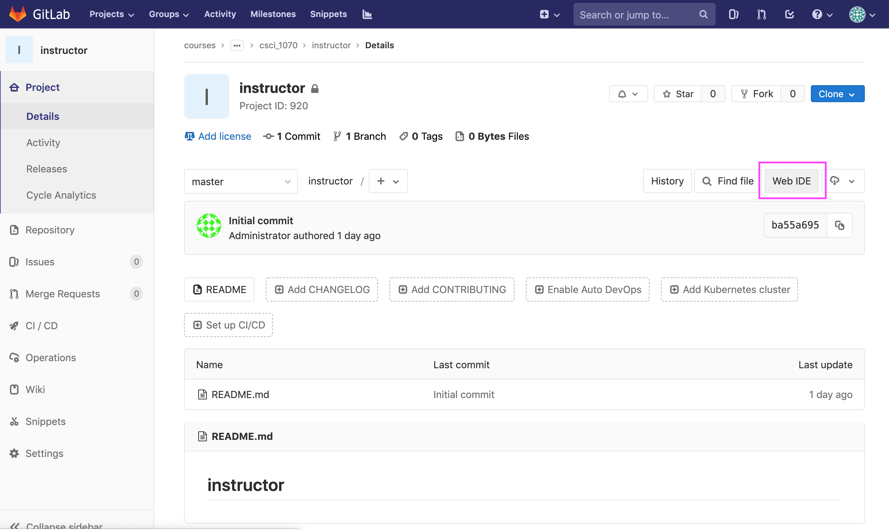
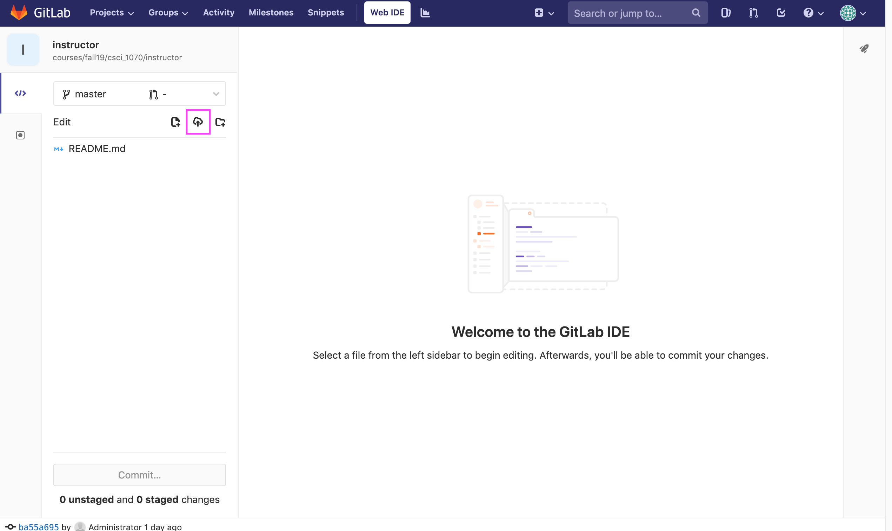
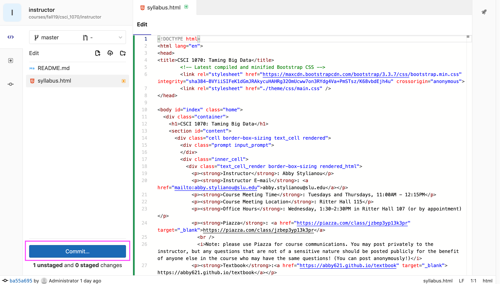
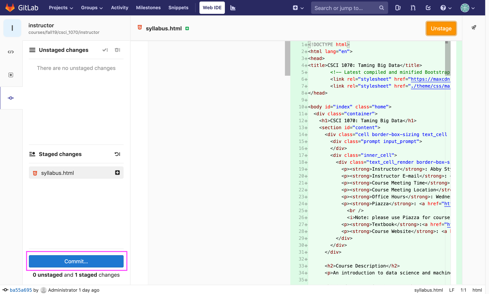
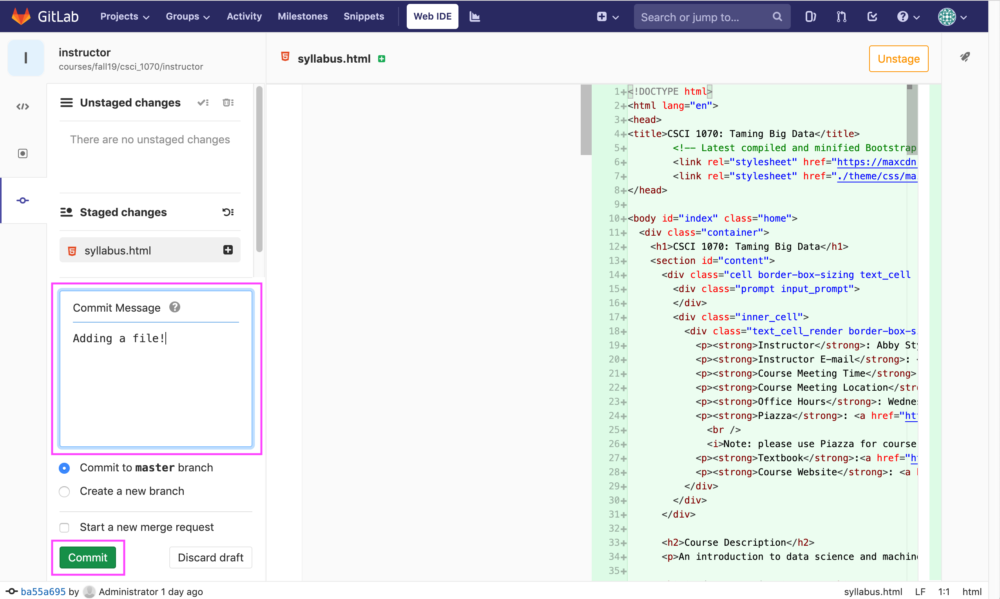

Your assignments will be distributed as incomplete IPython notebooks, available on the course schedule page.
You should complete the missing sections of the notebooks, testing them in your Jupyter environment. When your assignment is done, you should save out your completed IPython Notebook (a .ipynb file):

To turn in your assignment, you will check them in to your CS 1070 git repository (http://git.cs.slu.edu/courses/fall19/csci_1070/<Your-SLUNetID>)
This can be done either via the GitLab Web IDE or the command line.
Checking In Via Web IDE





Checking In Via Command Line
You can read about using git via the command line here.
That tutorial starts you off by creating your own new repository, which is a useful exercise, but make sure to read all the way to the bottom about cloning and contributing to an existing repository, as that's what you'll be doing in this class (cloning and contributing to the main branch on http://git.cs.slu.edu/courses/fall19/csci_1070/<Your-SLUNetID>).